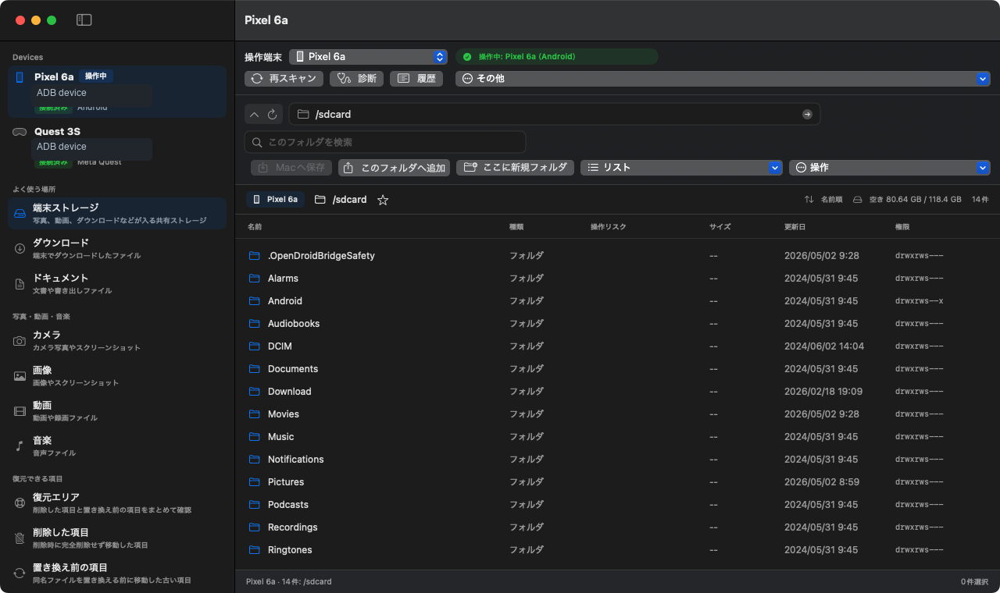
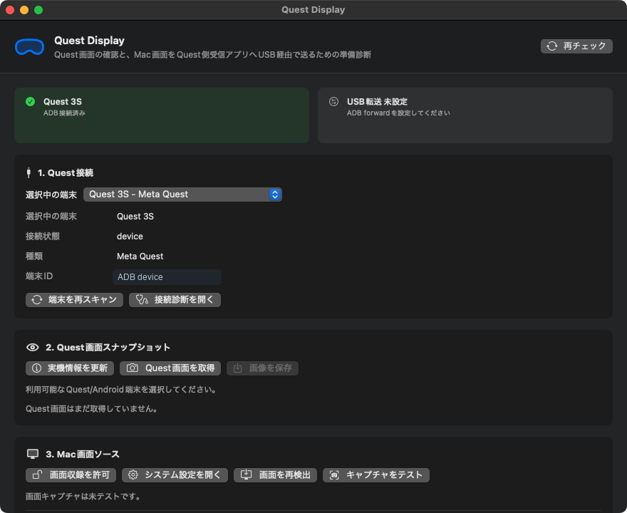

見つける
DCIM、Pictures、Movies、Download、Quest録画など、よく使う場所へすばやく移動できます。
Core workflow
端末の状態、現在の場所、空き容量、操作リスクを確認しながら、Macへ保存・端末へ追加・新規フォルダ作成を進められます。
DCIM、Pictures、Movies、Download、Quest録画など、よく使う場所へすばやく移動できます。
選択したファイルやフォルダをMacへ保存。Macから端末側フォルダへドラッグして追加できます。
削除や上書き前の項目を復元エリアへ残し、誤操作に気づいたあとでも確認し直せます。

Real device preview
Safety model
同名ファイルを送るときは、置き換える・両方残す・スキップを選択。置き換え前の項目や削除した項目は、復元できる場所から確認できます。
OpenDroidBridgeは、端末内ファイル操作をユーザーの明示的な操作として扱い、復元できる処理を既定にしています。


Quest diagnostics
Quest Display画面では、ADB接続、Quest画面スナップショット、実機情報、ADB forwardの準備状態を確認できます。
VR空間への映像表示やQuest側受信アプリは別機能です。サイトでは、現在のアプリで実際に提供している診断機能として表現しています。
Requirements
macOS 14以降。App Store配布版ではサンドボックス環境で動作します。
開発者向けオプションとUSBデバッグを有効化したAndroid端末、または開発者モードを有効化したMeta Quest。
Android platform-toolsに含まれるadbが必要です。Android Studioを入れている場合は通常同梱されています。